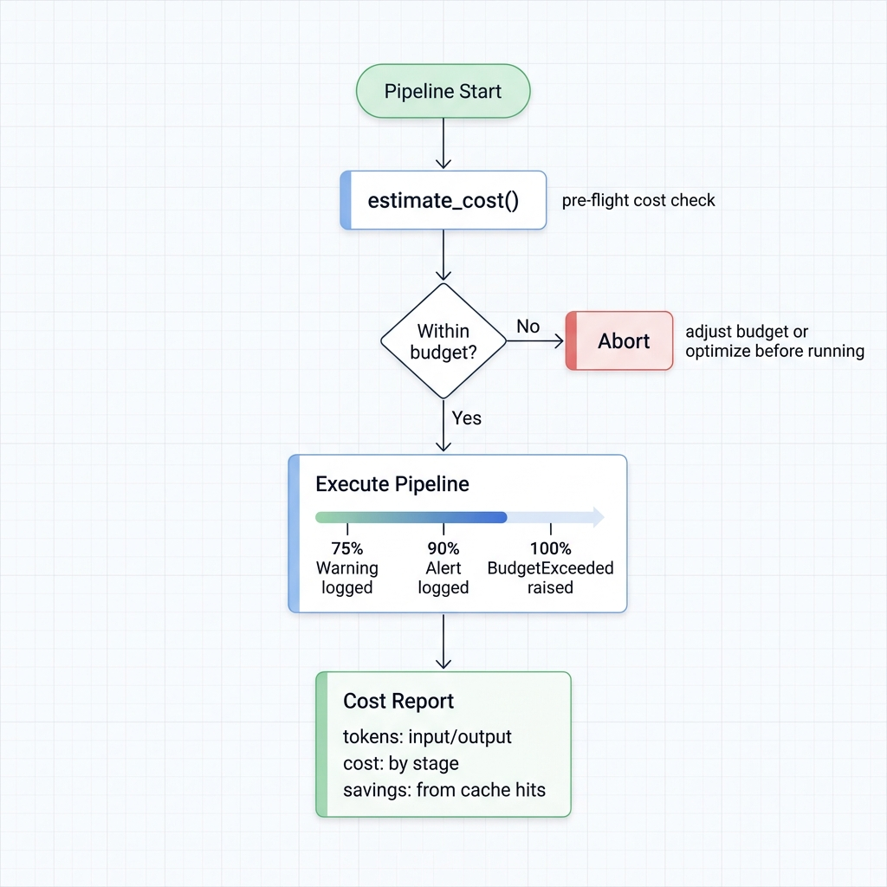

Cost Estimation & Budgets¶
LLM APIs bill per token, and it adds up fast. A 5M-row dataset through GPT-4 can easily cost hundreds of dollars. Ondine gives you three levers: estimate before you run, cap spending with hard budgets, and cut costs with batching and caching.

Estimate Before You Spend¶
Always check the price tag first:
from ondine import PipelineBuilder
pipeline = (
PipelineBuilder.create()
.from_csv("data.csv", input_columns=["text"], output_columns=["summary"])
.with_prompt("Summarize: {text}")
.with_llm(provider="openai", model="gpt-4o-mini")
.build()
)
estimate = pipeline.estimate_cost()
print(f"Total rows: {estimate.total_rows}")
print(f"Estimated tokens: {estimate.estimated_tokens}")
print(f"Estimated cost: ${estimate.total_cost:.4f}")
print(f"Cost per row: ${estimate.cost_per_row:.6f}")
If the number looks wrong, fix the prompt or switch models before burning real money.
Budget Limits¶
Hard caps. The pipeline stops when the budget runs out:
from decimal import Decimal
pipeline = (
PipelineBuilder.create()
.from_csv("data.csv", ...)
.with_prompt("...")
.with_llm(provider="openai", model="gpt-4o-mini")
.with_max_budget(Decimal("10.0")) # Max $10 USD
.build()
)
result = pipeline.execute()
During execution, Ondine tracks spend against three thresholds: 75% (warning logged), 90% (alert logged), 100% (BudgetExceeded raised, pipeline stops). Pair this with checkpointing so you can resume after adjusting the budget.
Cutting Costs¶
Six techniques, ranked by impact.
1. Multi-Row Batching¶
The biggest win. Instead of one API call per row, pack 100 rows into a single call:
# Without batching: 5M rows = 5M API calls (~69 hours)
pipeline = (
PipelineBuilder.create()
.from_csv("data.csv", input_columns=["text"])
.with_prompt("Classify: {text}")
.with_llm(provider="openai", model="gpt-4o-mini")
.build()
)
# With batching: 5M rows = 50K API calls (~42 minutes)
pipeline = (
PipelineBuilder.create()
.from_csv("data.csv", input_columns=["text"])
.with_prompt("Classify: {text}")
.with_batch_size(100) # 100 rows per API call
.with_llm(provider="openai", model="gpt-4o-mini")
.build()
)
Token cost stays the same, but you eliminate API call overhead entirely. Start with batch_size=10 and scale up:
- Simple classification prompts: 50-500 rows/batch
- Complex extraction prompts: 10-50 rows/batch
See examples/21_multi_row_batching.py for the full walkthrough.
2. Prefix Caching¶
Separate your static instructions from per-row data. Providers cache the static part and only charge for the dynamic portion:
# Bad: system instructions baked into every prompt
pipeline = (
PipelineBuilder.create()
.with_prompt("""You are a sentiment classifier.
Classify as: positive, negative, or neutral.
Return only the label.
Review: {text}
Sentiment:""") # Entire prompt sent every time
.with_llm(provider="openai", model="gpt-4o-mini")
.build()
)
# Good: system prompt cached by the provider
pipeline = (
PipelineBuilder.create()
.with_prompt("Review: {text}\nSentiment:") # Dynamic only
.with_system_prompt("""You are a sentiment classifier.
Classify as: positive, negative, or neutral.
Return only the label.""") # Cached
.with_llm(provider="openai", model="gpt-4o-mini")
.build()
)
Real numbers for 5,000 rows with a 500-token system prompt:
| Approach | Tokens billed | Cost (GPT-4o-mini) | Savings |
|---|---|---|---|
| Without caching | 2.75M | $0.41 | -- |
| With caching | 250K | $0.04 | 90% |
Provider support varies:
| Provider | Caching | Savings on cached tokens | Latency drop |
|---|---|---|---|
| OpenAI | Automatic | 50% | ~50% |
| Anthropic | Automatic | 90% | ~85% |
| Azure OpenAI | Automatic | 50% | ~50% |
| Groq | Not supported | -- | -- |
Verify it's working by checking average tokens per row after execution:
result = pipeline.execute()
avg = result.costs.total_tokens / result.metrics.processed_rows
print(f"Avg tokens/row: {avg:.0f}") # Should be ~50-100, not ~550
See examples/20_prefix_caching.py for a working example.
3. Combine Batching + Caching¶
Stack them. This is where the real savings hit:
pipeline = (
PipelineBuilder.create()
.with_prompt("Classify: {text}")
.with_system_prompt("You are a classifier.") # Cached
.with_batch_size(100) # 100x fewer calls
.with_llm(provider="openai", model="gpt-4o-mini")
.build()
)
4. Pick Cheaper Models¶
Not every task needs GPT-4:
| Provider | Model | Cost (per 1M tokens) | Best for |
|---|---|---|---|
| OpenAI | gpt-4o-mini | $0.15 | General-purpose |
| Groq | llama-3.3-70b | $0.05-0.10 | Speed + cost |
| Together.AI | various | $0.20-0.60 | Open models |
| Local MLX | any | $0 | Apple Silicon, privacy |
# $0.03/1K tokens
.with_llm(provider="openai", model="gpt-4")
# $0.0001/1K tokens (300x cheaper)
.with_llm(provider="openai", model="gpt-4o-mini")
# $0 — runs on your laptop
.with_llm(provider="mlx", model="mlx-community/Qwen2.5-7B-Instruct-4bit")
5. Write Shorter Prompts¶
Every token in your prompt gets billed. Be concise:
# 47 tokens — verbose
prompt = """
You are a helpful assistant specialized in text summarization.
Please carefully read the following text and provide a comprehensive
summary that captures the main points while being concise.
Text: {text}
Please provide your summary below:
"""
# 7 tokens
prompt = "Summarize in 1 sentence: {text}"
Also: set temperature=0.0 for deterministic tasks (shorter, more focused output) and cap response length with max_tokens:
6. Response Caching¶
If your dataset has duplicate inputs, don't pay twice. See the Caching guide for disk and Redis caching.
Cost Tracking¶
During Execution¶
result = pipeline.execute()
print(f"Total cost: ${result.costs.total_cost:.4f}")
print(f"Input tokens: {result.costs.input_tokens:,}")
print(f"Output tokens: {result.costs.output_tokens:,}")
print(f"Cost per row: ${result.costs.total_cost / result.metrics.processed_rows:.6f}")
Across Multiple Runs¶
from ondine.utils import CostTracker
tracker = CostTracker()
for config in pipeline_configs:
pipeline = build_pipeline(config)
result = pipeline.execute()
tracker.add(
provider=config["provider"],
model=config["model"],
cost=result.costs.total_cost,
tokens=result.costs.total_tokens,
)
summary = tracker.summary()
print(f"Total spend: ${summary['total_cost']:.2f}")
print(f"Total tokens: {summary['total_tokens']:,}")
Export to CSV¶
import pandas as pd
cost_report = pd.DataFrame([{
"date": pd.Timestamp.now(),
"rows": result.metrics.processed_rows,
"total_cost": result.costs.total_cost,
"input_tokens": result.costs.input_tokens,
"output_tokens": result.costs.output_tokens,
"provider": "openai",
"model": "gpt-4o-mini",
}])
cost_report.to_csv("cost_log.csv", mode="a", header=False, index=False)
Budget-Aware Workflows¶
Estimate-Then-Execute Pattern¶
def safe_execute(pipeline, max_cost=10.0):
estimate = pipeline.estimate_cost()
if estimate.total_cost > max_cost:
print(f"Estimated cost ${estimate.total_cost:.2f} exceeds budget ${max_cost:.2f}")
return None
print(f"Proceeding with estimated cost: ${estimate.total_cost:.2f}")
return pipeline.execute()
result = safe_execute(pipeline, max_cost=5.0)
Streaming with Cost Checks¶
For large datasets, stream chunks and bail if costs climb too high:
from decimal import Decimal
pipeline = (
PipelineBuilder.create()
.from_csv("large_data.csv", ...)
.with_streaming(chunk_size=1000)
.with_max_budget(Decimal("20.0"))
.build()
)
total_cost = 0.0
for chunk_result in pipeline.execute_stream():
total_cost += chunk_result.costs.total_cost
print(f"Chunk: ${chunk_result.costs.total_cost:.4f}, "
f"Running total: ${total_cost:.4f}")
if total_cost > 15.0:
print("Approaching budget limit, stopping")
break
Related¶
- Caching -- disk and Redis response caching
- Execution Modes -- async and streaming for large datasets
- Routing -- multi-provider load balancing and cost-based routing